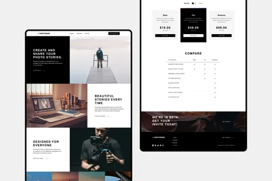

Back


Photosnap multi-page website
PhotoSnap multi-site web challenge from Frontend Mentor, I had a remarkable opportunity to showcase my web development skills by building a marketing website for an advanced photo-sharing app. This challenge was the perfect to showcase my mastery of CSS Grid, allowing me to create responsive and visually appealing layouts.
Key Achievements
- A careful copy of the design is provided, to get it looking as close as possible.
- Implemented advanced CSS Grid techniques to ensure optimal layouts for each page, adapting to various screen sizes and devices.
- Implemented hover states for all interactive elements, for better user interactivity.
- Leveraged React and TypeScript to create a robust, maintainable, and dynamic codebase for smooth content interaction and rendering.
- Used Framer Motion to add smooth and attractive animations, for better user experience and visual appeal.
- Used SCSS to optimize styling, and create cleaner, more organized style sheets for efficient maintenance and quick iteration.
- Tested on various devices, browsers, and screen sizes to ensure a seamless and appealing user experience.
- Accepted the challenge as an opportunity for personal and professional growth, expanding my skills and knowledge in web design and development.
Tools Used
- React
- TypeScript
- SCSS
- Framer Motion